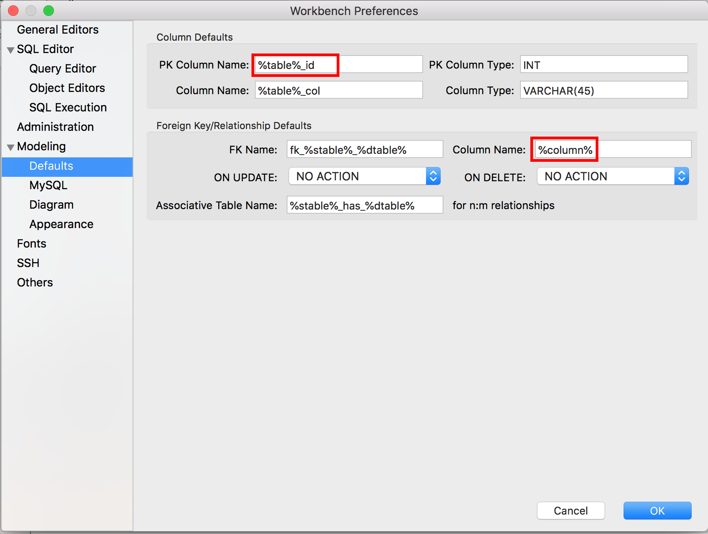

Note: The weekly Teaching Notes only identify week-specific considerations. Please refer to the
General Teaching Notes for repeating course facilitation expectations.
Week 02 Outcomes
Understand data-driven decision making
Understand how data can help people and organizations
Understand the use of spreadsheets and how to use them effectively
Understand the limitations of spreadsheets
Before the Week Begins
Students will go over preparation materials and complete the preparation check before the first class of the
week.
The students should have completed the preparations materials and check before the first class of the week
and be ready for learning, activities, and discussions. (W02 - Preparation Check) Have the preparation check
be due before the first class of the week.
(W02 - Spreadsheets / Tabular Data):
Have a discussion about ways data might be organized to help with decision making.
Have students look at different ways students stored their data in a spreadsheet from last week. [Some had
grids, some recorded tables vertically some horizontally, Ask them how they'd identify which image went with
which student, some seperated them in tabs, some had it in one spreadsheet, etc.] Once they are done, talk
about how each row should be one entity (record) and each column one attribute (field) of that entity or
record; otherwise when sorting or adjusting column widths the data can become inefficient. (It would be
helpful to demonstrate this with poorly put together spreadsheets. Also, talk about the first row of the
spreadsheet as the column headers to tell what is in each row. Help them understand they can make new tabs
(new worksheets) for each new table of information. This is better than putting all the tables on one
worksheet because column widths and sorting and filtering are clarified.
Talk about data consistency, data integrity and data redundancy. For example with Data Integrity, you
shouldn't be able to add images that don't belong to a student, but our spreadsheet would let us do that.
With Data Consistency you could enter a date where there should be a last name and spreadsheets don't
restrict the user by default. Data Redundancy may be demonstrated with how they might have to repeat the
student's names again on the 2nd sheet so you know which images belong to that student. If we have a name
change we have to do it in two different places this is data redundancy. (You can demonstrate things like
linking cells between tables or data validation within Excel if you'd like, but the purpose is not to teach
Excel but use a tool they might be more familiar with to introduce database topics they will see later.)
Talk about sorting and filtering the data to make it easier to find our answer. Excel has the Filter and
Sort options you can use to show this. This will help them understand ORDER BY and WHERE in SQL later.
(W02 - Asking Questions of the Data):
Have a discussion about how to use this data. How can we make money on it? How can we help people with it?
How can we provide value in some way with it? This is why a goal, vision or mission is important to base the
direction you want to go with the information you get from the data.
How might they query or ask questions of the data in the spreadsheets (here are some question ideas):
What was the top distraction category for our group? What was the top distraction category for our
class?
What was the top worry category for our group> What was the top worry category for our class?
Which group had the most selfies?
Did males or females have the most group type images?
Which major had the most documentation type images?
Students will notice at this point how hard and time consuming it is to get some of
the questions answered. Point out the fact that they might have several hundred students or more to keep track of.
Later when we do an SQL query to get the same information, it will become apparent to them the advantages of a
database over a spreadsheet for in-depth data retrieval on related tables.
(W02 - Database vs. Spreadsheet):
Have them watch this video to prepare them for next week and let them start to understand why we can't
just use spreadsheets for all data:
Remind students of the quiz, there will be a quiz each second class of the week.
Mid-week
Have them complete their quiz by themselves once and then with others for the second attempt. The
discussions and debates during the second attempt as a group are great 'teach one another' opportunities.
The two scores will be averaged for their final quiz score.
(W02 - Workbench Installation)
Here are some videos if you need to see it in action before having the students install. They will have pdf's to follow.
Give the students time to work on their "Exploring Workbench" videos/assignment.
The homework due Saturday will be
the students watching the "Exploring Workbench" Videos and following instructions and submitting two screenshots.
Grading/Feedback
Instructor: The check and quiz are auto-graded. The submitted homework (W02 - Exploring
Workbench) will be checking their 2 screenshots. One screen shot is showing the two new patterns in 'PK Column
Name: %table%_id and 'Column Name:' %column%. The second screen shot should show their schema list (they should
not have a store schema and the mysql schema should be hidden.)

Looking Ahead
Remind students that they have readings and videos to watch and a check to complete before the first class of
the week to be prepared for the next week.